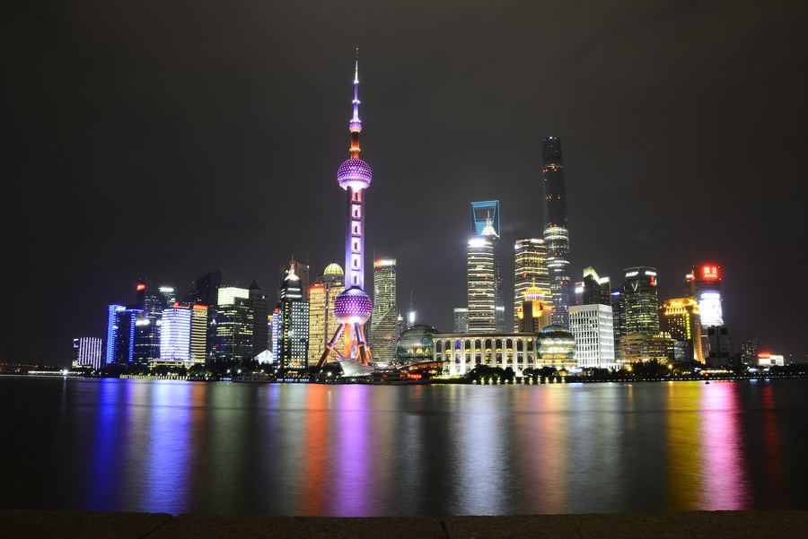
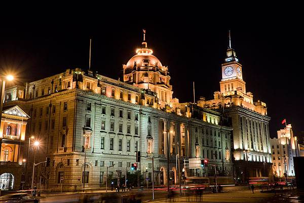
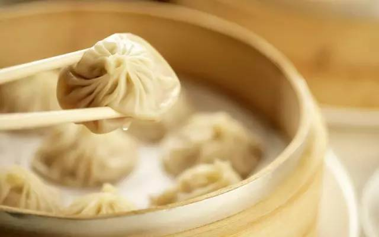
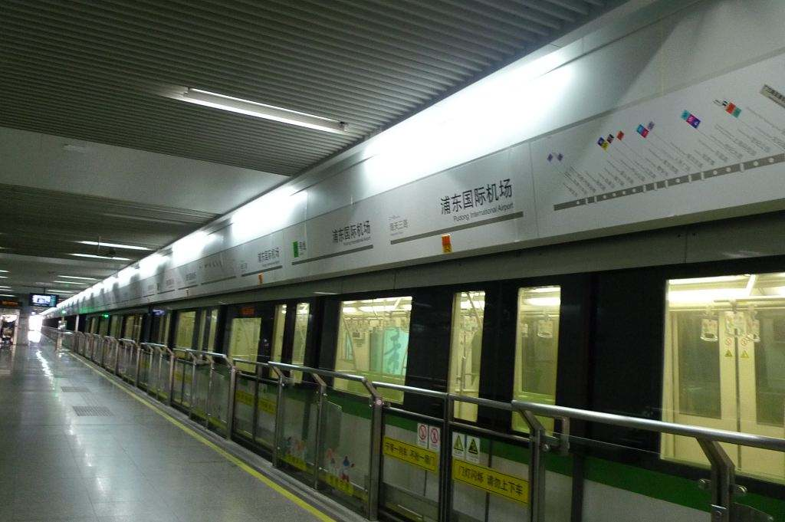

Information about Shanghai.
Shanghai is a provincial-level administrative region, municipality directly under the central government, national central city and mega city of the People's Republic of China, China's international economic, financial, trade, shipping, scientific and technological innovation center, and national logistics hub. Shanghai is located in the east of China, at the mouth of the Yangtze river, east of the east China sea, north and west of jiangsu and zhejiang provinces, bounded between longitude 120 ° 52 '-122 ° 12' east and latitude 30 ° 40 '-31 ° 53' north.
The bund, for more than a hundred years, has been the symbol of Shanghai in front of the world, it is located in the west bank of the huangpu river from the waibaidu bridge to the Nanpu Bridge, with a total length of 4 kilometers, is one of the top 10 new landscapes and top 10 tourist attractions in Shanghai in the 1990s. The eastern side of the bund is only the bund of the huangpu river and beautiful new bank, here, visitors can appreciate the elegant demeanour of Shanghai female new river, the huangpu river, overlooking the other side the new pudong lujiazui region, or walking between the green trees flower bed, feel the metropolitan landscape distinctive flavour, enjoy metropolis rare and pure and fresh air and sunshine.
1. Onion oil noodles
Whether it's frying pan, scrambled eggs, or small seafood, the taste of scallion is more satisfying than that of chili.
2. Steamed dumplings
It is famous for its thin skin, tender meat, juicy, fresh taste and beautiful shape.
3. Fried dough sticks
Fried dough sticks is the joker of Shanghai earlier, not only to eat alone, and eat pie is also a perfect fit, and can also be ZiFan match the regiment, soybean milk, tofu pudding, rice in soup, dipping sugar have a good taste of soy sauce.
Shanghai has 14 subway lines in operation, and a single ticket costs between 3 yuan and 7 yuan depending on the section of the subway. In comparison, a set ticket is more cost-effective. One-day tickets (18 yuan) and three-day tickets (45 yuan) offer unlimited 24 - and 72-hour rides. The first train usually takes from 5:30 to 6:00, and the last one from 22:00 to 22:30. For the low fare of 3 yuan, the 3-day ticket will be paid back if used 15 times in 3 days (72 hours). If you frequently take transportation in Shanghai, it is recommended to buy a one-day or three-day subway pass. Even if you do not buy one, a bus pass is also necessary for convenience.
